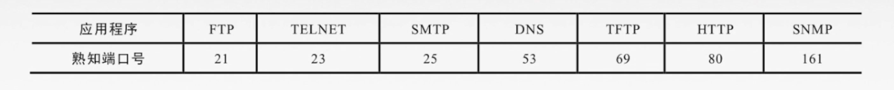
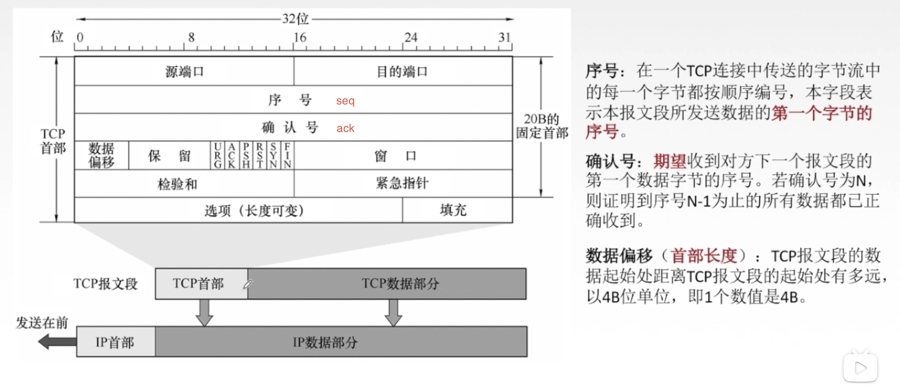

传输层
只有主机才会有的层次。为应用层提供通信服务，使用网络层的服务
功能：
- 提供进程和进程之间的逻辑通信。（网络层提供主机之间的逻辑通信。）
- 复用和分用
- 对收到的报文进行差错检测。
一 概览
1.1 传输层的两个协议
-
面向连接的 传输控制协议
TCP：【Transmission Control Protocol】 --- 可靠传输
传送数据之前必须建立连接，数据传送结束后要释放连接。不提供广播或多播服务。由于TCP要提供可靠的面向连接的传输服务，因此不可避免增加了许多开销：确认、流量控制、计时器及连接管理等。
特点：可靠，面向连接，时延大，适用于大文件。 -
无连接的 用户数据报协议
UDP：【User Datagram Protocol】 --- 不可靠传输
传送数据之前不需要建立连接，收到UDP报文后也不需要给出任何确认。
特点：不可靠，无连接，时延小，适用于小文件。
1.2 寻址与端口
复用：应用层所有的应用进程都可以通过传输层再传输到网络层。
分用：传输层从网络层收到数据后交付指明的应用进程。
端口(逻辑端口/软件端口)是传输层的SAP，标识主机中的应用进程。
端口号只有本地意义，在因特网中不同计算机的相同端口是没有联系的。
端口号长度为16bit，能表示65536个不同的端口号，

在网络中采用发送方和接收方的套接字组合来识别端点，套接字唯一标识了网络中的一个主机和它上面的一个进程。
套接字Socket =（主机IP地址，端口号）
二 UDP协议
UDP只在IP数据报服务之上增加了很少功能，即复用分用和差错检测功能。
UDP的主要特点：
- UDP是无连接的，减少开销和发送数据之前的时延。
- UDP使用最大努力交付，即不保证可靠交付。 --- 由应用层保证可靠交付
- UDP是面向报文的，适合一次性传输少量数据的网络应用。 --- 不处理应用层报文数据
- UDP无拥塞控制，适合很多实时应用。
- UDP首部开销小
8B（TCP 20B）。
2.1 UDP首部格式
分用时，找不到对应的目的端口号，就丢弃报文，并给发送方发送 ICMP“端口不可达”差错报告报文。
2.2 UDP校验
伪首部：
校验过程：
- 接收端的伪首部是从ip数据报中提取的发送目标地址等信息，不上下传送
三 TCP协议
主要特点：
- TCP是面向连接（虚连接）的传输层协议。
- 每一条TCP连接只能有两个端点，每一条TCP连接只能是点对点的。
- TCP提供可靠交付的服务，无差错、不丢失、不重复、按序到达。可靠有序，不丢不重
- TCP提供全双工通信：
- 发送缓存：准备发送的数据&已发送但尚未收到确认的数据
- 接收缓存：按序到达但尚未被接受应用程序读取的数据＆不按序到达的数据
- TCP面向字节流 => TCP把应用程序交下来的数据看成仅仅是一连串的无结构的字节流。
流：流入到进程或从进程流出的字节序列。
3.1 TCP首部格式

6个控制位：
- 紧急位
URG【urgent】：URG=1时，标明此报文段中有紧急数据，是高优先级的数据，发送端应尽快传送，不用在缓存里排队，配合紧急指针字段使用。 - 确认位
ACK【acknowledgement】：ACK=1时确认号有效，在连接建立后所有传送的报文段都必须把ACK置为1。 - 推送位
PSH【push】：PSH=1时，接收方尽快交付接收应用进程，不再等到缓存填满再向上交付。 - 复位
RST【reset】：RST=1时，表明TCP连接中出现严重差错，必须释放连接，然后再重新建立传输链接。 - 同步位
SYN【synchronous】：SYN=1时，表明是一个连接请求/连接接受报文。 - 终止位
FIN【finish】：FIN=1时，表明此报文段发送方数据已发完，要求释放连接。
窗口：指的是发送本报文段的一方的接收窗口，即现在允许对方发送的数据量。
检验和：检验首部+数据，检验时要加上12B伪首部，第四个字段为6。 --- 同UDP
紧急指针：URG=1时才有意义，指出本报文段中紧急数据的字节数。
选项：最大报文段长度MSS、窗口扩大、时间戳、选择确认…